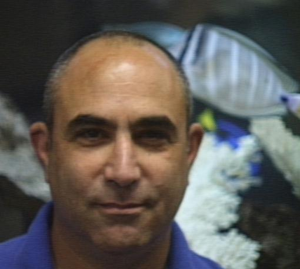
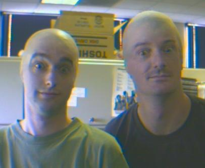
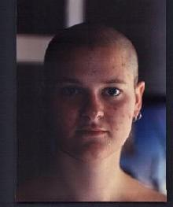
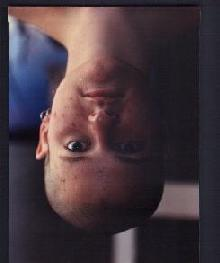
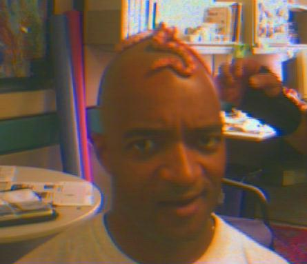

Now, through moden hair-deforestation techniques, you can achieve the natural, bald-as-an-egg look in a few simple steps.
So call 1-800-SHAVEME right away and begin to enjoy all the benefits you've
been missing. After all ...
... I'm not just the
President of The No Hair Club For Men, I'm a customer.
Being from a foreign
country, I sometimes found it difficult to fit in when placed in new situations.
Thanks to the No Hair Club For Men, I am now able to take command of
any situation. People tell me my hair feels very soft now, I like that.
 It really works. After
years stuck in middle managment, I got a good job at a high tech company, a
big raise, and fish whisper stock market picks in my ear, all thanks to the
No Hair Club For Men
Shave your head now
you girly boy, or I will break your face.
 So, um like,
last thing I remember was Jim handing me this bottle of Tequila ...
|  | I really idolize Persis Khanbatta and Sigourney Weaver. Thanks to the No Hair Club I can now be sucked up into a ship to uh, become a messenger and everything. |
 |
My friends tried to
tell me about the No Hair Club For Men, but I wouldn't listen to them.
Then I saw the No Hair Club For Men web page and I decided to give it
a try. Just look at me now!
I was a little nervous
about hair deforestation, so the No Hair Club For Men Transition Specialist
suggested wearing progressively smaller and smaller live animals on my head.
It's really working, in three more weeks, I move down to a banana slug.
Now that my hair
is gone, I live in a perpetual state of joyous bliss. Who would have believed
that such happiness was possible? Excuse, I must go frolic and leap my way through
the blessing that is my new life ...